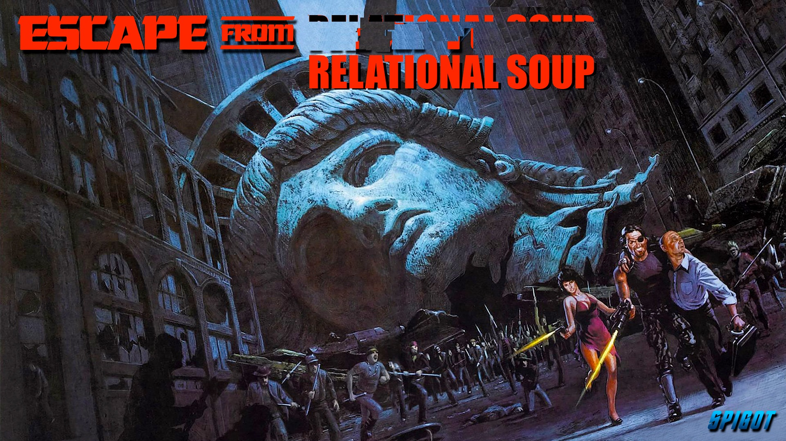

Angular Connect 2016
Magnus Gudmundsson
CyberDaDa
Occurs every year in London
27 & 28 September 2016
7 & 8 November 2017
+ one day of pre workshop
All talks available on youtube
Semantic versioning [ x.x.x]
A major update every 6th month
Breaking changes will be announced in good time
A recommended migration path will be documented
Always more than 6 months to upgrade
A major update every 6th month
Breaking changes will be announced in good time
A recommended migration path will be documented
Always more than 6 months to upgrade
Breaking changes will be announced in good time
A recommended migration path will be documented
Always more than 6 months to upgrade
A recommended migration path will be documented
Always more than 6 months to upgrade
Always more than 6 months to upgrade
Topics
Angular CLI
Graph QL
Animation
ngMaterial
And many others... :)
- RxJS
- The new router
- Going from 1.5 to 2
- Forms
- How to do a meetup
- Native script
Angular CLI
Stephen Fluin
...
Removing all the boring stuff with magic
https://www.youtube.com/watch?v=uBRK6cTr4Vk
cli.angular.io

stuff you can do with Angular CLI
- Scaffolding
- Generating
- Serving
- Building
- Testing
- Distributing
npm install -g angular-cli
npm install -g angular-cli@latest
ng new my-new-project
- All npm dependencies in place
- Generated code follows styleguide
- Typescript and testing configuration
Scaffolding options
- dry-run
- blueprint
- skip-npm / skip-git
- source-dir
- style
- prefix
- mobile
- routing
ng new my-new-project
Generate (stuff)
- Module
- Component
- Service
- Directive
- Route [Currently not working]
- Pipe
- Class
ng generate component bongocomp
Generation of components generates:
- Component
- html template
- css template
- spec file
Serve!
ng serve
- Compiles Sass/less
- TS transpilation
- Bundles Javascript + css
- Asset optimization
- Virtual filesystem for assets
- Live-reload via websockets (broken atm?)
- Code splitting (bundles load children routes seperately
Build!
ng build
Adds minification uglification and a "real" filesystem
ng test (Karma/Jasmine/Istanbul coverage)
ng e2e (Protractor)
ng github-pages:deploy
+ build creates the /dist/ folder copy deploy anywhere :)
- AOT
- Mobile (PWA)
- Universal
- Refactoring
- Upgrades
- Addons
- Performance
- Library developer mode
More resources
-
Use the Angular CLI For Faster Angular 2 Projects
A detailed overview
-
Angular CLI and real development productivity
A more biased overview
Angular 2 Animations
Matias Niemela
...
https://www.youtube.com/watch?v=4VDmIVrML34
- Defined as part of the metadata inside @Component
- Own DSL (Domain Specific Lanuage)
- State-Based
- Programatic Access*
- DSL != CSS + HTML
- No transitionss/Keyframes
- Functional Composition
- Animations are Platform Agnostic
- AOT Friendly
Based upon the Web-Animation API
Animations defined in the components metadata part
And then invoked in the template part with @prefix
@Component({
selector: 'slider',
styleUrls: ['./demo_1/slider.css'],
animations: [
trigger('openClose', [
state('void, closed', style({ height: 0 })),
state('open', style({ height: '*' })),
transition('* => *', animate('500ms ease-out'))
])
],
....Bone Stretcher....
GraphQL - an Api query language
Connect your Angular app to any existing backend with GraphQL
Uri Goldstein
...
https://www.youtube.com/watch?v=AEjC-gyOTJQ
Developed by Facebook around 2012
Open Sourced 2015

Problems with REST?
Average roundtrip time: 12 sec
Average loss of datapackets 20%
Cut the Restafarian crap,
Lets make fat calls :)
Coupling: Tight
Cohesion: Low
Server knows to much about client needs
Changes affect both server and client
Escape from the relational soup?
In a perfect world
- Declare your data needs like you think about it
- Know in advance what you can fetch
- Decoupling from the server world
- Each Component declares its own data needs, and merges it into one round trip
- Single Endpoint
GraphQL
A query language that allows you to specify what you need, and also in relation to what
1000000000000000 requests per day
used at scale under load
Hello GraphQL World
{
me {
name
}
}
Client asks for and gets exactly what he wants
|
|
{
user(id:23424) {
name
}
}
{
me {
name
profilePicture {
width
height
url
}
}
}
One to Many?
{
me {
name
friends {
name
}
events {
name
}}
}
Models and views live on the client -> Versioning much easier (server supports all historical variants)
NOT a storage engine
Queries run arbitrary code
In your code every field on the server can be expressed as a function.
Notice typing
{
type User {
name: String,
profilePicture(size: Int = 50) : ProfilePicture
friends: [User]
}
}
new GraphQLObject({
type "User",
fields: {
//name: String
name(user) {
return user.name;
} ,
//profilePicture(size: Int =50 ):ProfilePicture
profilePicture(user, {size}) {
return getProfilePicForUser(user, size)
},
// friends: [User]
friends(user) {
return user.friendsIDS.map(id => promiseUser(id))
}
}
});
Also supports insterts/updates/deletes
Called Mutations
mutation {
createComment(
storyId: 432424
text: "That was awesome"
){
comment {
createTime
}
}
}
GraphiQL - Demo
Hey, what about Angular?
Angular Demo (is broken, but we can look at the code...)
example of how to build GraphQL api in Node
https://www.youtube.com/watch?v=DNPVqK_woRQGraphQL server tutorial for Node.js with SQL, MongoDB and REST
https://www.youtube.com/watch?v=PHabPhgRUuU>https://www.youtube.com/watch?v=PHabPhgRUuULast (but not least)
Some conferences to visit:

dotJS
December 5 2016 Paris, France
20% ticket discount for AngularJS Gothenburg members
ngVikings
ngVikings.org
February 11-12 2017
Modestly priced :)
?% ticket discount for AngularJS Gothenburg members